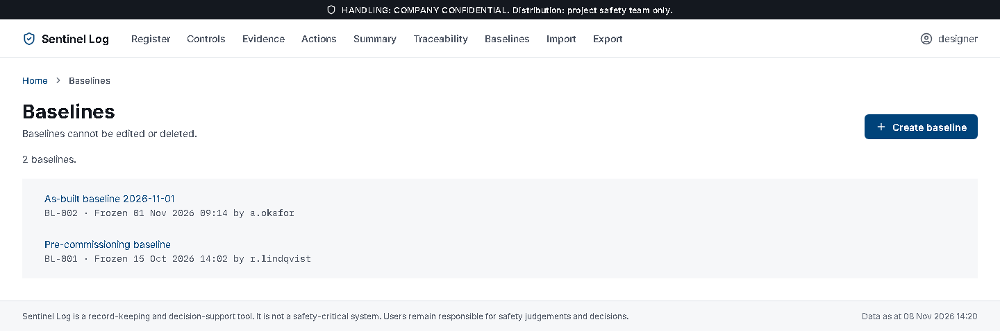

UC-13: Create and compare baselines. Actor: Reviewer / admin
Main flow
- administrator opens the baseline list; the list shows existing baselines and the frozen counts (req-53).
- administrator creates a named baseline with a reason and the immutability acknowledgement; the product allocates a fresh BL identifier and the detail page names the baseline with its freeze time (req-53).
- administrator reads the frozen register on the detail page; UAT-0001 renders with its frozen title and residual category (req-53).
- administrator compares the baseline against live data by opening the summary with the baseline dataset and the live register side by side; frozen counts differ from live counts after a record changes (req-53). ```mermaid sequenceDiagram participant A as Administrator (uat-admin) participant S as Product A->>S: Create named baseline with reason and acknowledgement (req-53) S->>A: Baseline detail names baseline and freeze time A->>S: Open summary with baseline dataset (req-53) S->>A: Summary reflects frozen counts, live may differ ```
Stills

Cited check phrases
- opens baseline list